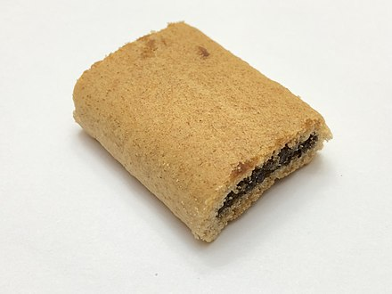

- history
- varieties
- gallery
Newtons are a Nabisco-trademarked version of a pastry filled with sweet fruit paste. "Fig Newtons" are the most popular variety (fig rolls filled with fig paste). They are produced by an extrusion process. Their distinctive shape is a characteristic that has been adopted by competitors, including generic fig bars sold in many markets.
The product was invented by Charles Roser and baked at the F. A. Kennedy Steam Bakery for the first time in 1891.
